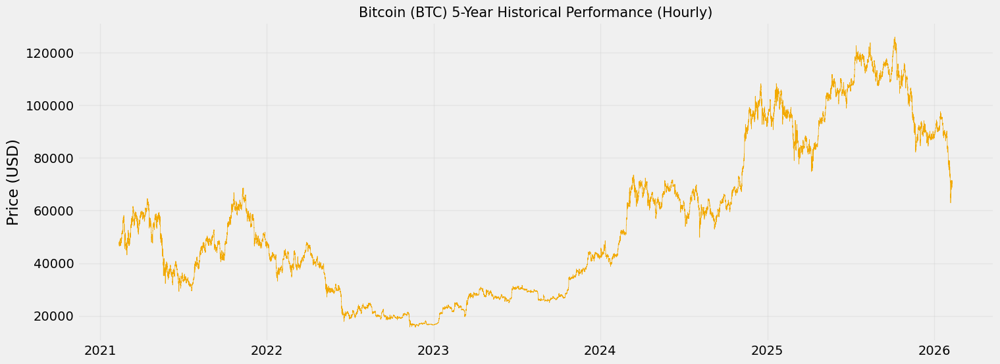
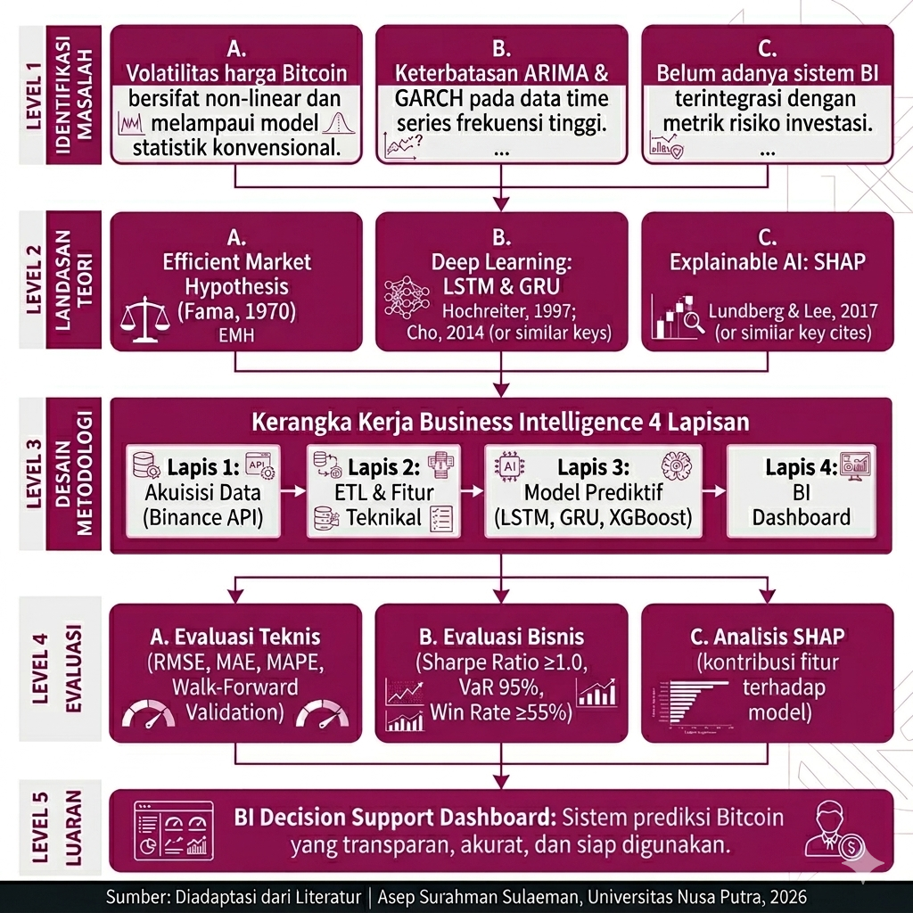
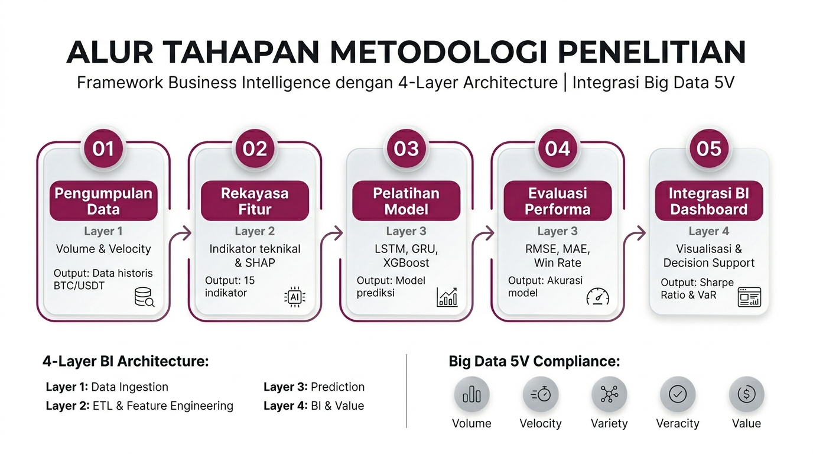
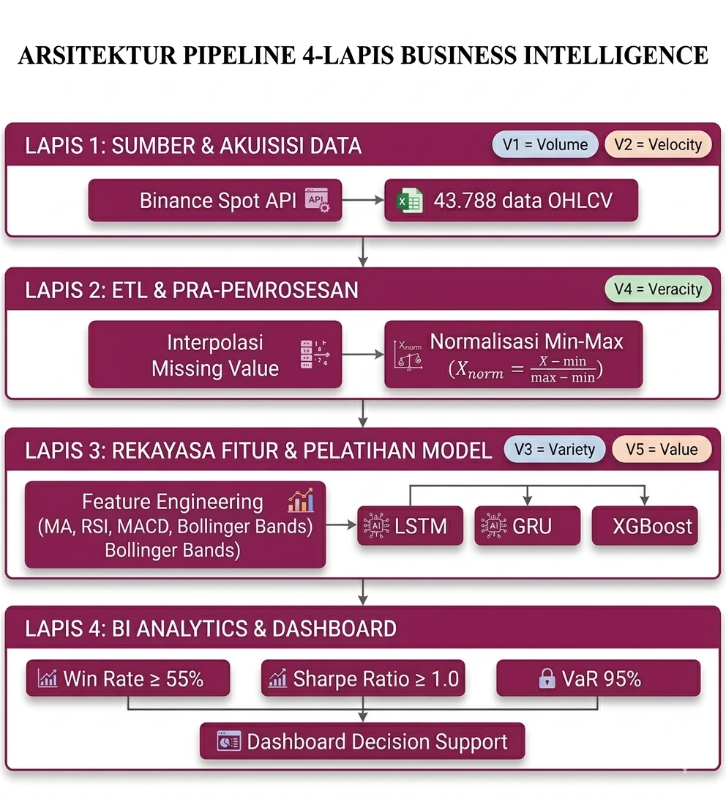

Asep Surahman Sulaeman
Magister Informatika · Universitas Nusa Putra, Sukabumi
asep.surahman@nusaputra.ac.id
💡 Klik pada masing-masing poin berikut untuk membuka pengantar dasar penelitian:
💡 Klik pada baris kejadian di bawah ini untuk melihat rinciannya:
| Peristiwa (2021–2026) | Dampak Historis |
|---|---|
| Bull Market Pertama (Nov 2021) | ↑ ATH $69.000 |
| Harga Bitcoin melonjak hingga mencapai rekor tertinggi barunya (All-Time High) di angka ±$69.000 (sekitar Rp1,07 Miliar). Fenomena ini menunjukkan tingginya minat dan kepercayaan investor dari perusahaan besar (institusi) sebelum ekonomi global mulai melemah akibat inflasi [6]. | |
| Krisis Ekosistem Kripto (2022) | ↓ Anjlok ke $16.500 |
| Runtuhnya proyek koin Terra/LUNA yang diikuti oleh kebangkrutan bursa kripto raksasa FTX memicu krisis kepercayaan yang meluas di pasar keuangan digital. Kepanikan ini membuat harga Bitcoin anjlok drastis ke titik terendah ±$16.500 (sekitar Rp255 Juta) [6],[10]. | |
| Halving & Konflik Makro (Apr 2024) | ⚡ Volatil Asimetris |
| Siklus empat tahunan pengurangan produksi Bitcoin (Halving) yang seharusnya menaikkan harga akibat kelangkaan suplai, justru terjadi bersamaan dengan eskalasi militer bersenjata antara Iran dan Israel. Peristiwa ini membuktikan bahwa guncangan geopolitik eksternal dapat menimbulkan pergerakan harga yang sangat liar [8],[9]. | |
| Re-eleksi Presiden AS (Des 2024) | ↑ Rekor > $100Ribu |
| Terpilihnya kembali presiden di Amerika Serikat yang mendukung kebijakan pro-kripto menumbuhkan sentimen positif (risk-on event) yang sangat kuat di pasar. Kondisi politik yang menguntungkan ini meyakinkan para pemodal besar untuk kembali berinvestasi, sehingga harga Bitcoin mencetak rekor fantastis menembus $100.000 (sekitar Rp1,55 Miliar). | |
| Risiko Geopolitik Global (Feb 2026) | ↓ Panic Sell ke $66k |
| Meningkatnya ketegangan militer multinasional memicu kekhawatiran global terhadap terganggunya rute perdagangan internasional (seperti Selat Hormuz). Situasi yang menegangkan ini menyebabkan aksi jual besar-besaran secara panik (panic selling), menurunkan harga Bitcoin secara tajam ke $66.824 (±Rp1,03 Miliar) dalam zona Extreme Fear [7]. | |

💡 Klik pada masing-masing poin batasan berikut untuk melihat rincian ruang lingkup penelitian:
| No. | Judul Publikasi Ilmiah | Peneliti (Tahun) | Objek / Algoritma | Temuan Utama | Keterbatasan (Research Gap) |
|---|---|---|---|---|---|
| 1 | Forecasting and trading
cryptocurrencies with machine learning under changing market conditions (Terindeks: Scopus Q1) |
Sebastião & Godinho (2021) |
Objek: Memprediksi probabilitas arah pergerakan aset kripto harian untuk mensimulasikan
strategi trading riil tanpa metrik risiko manajerial. Algoritma: Machine Learning klasik (Random Forest, SVM, Regresi Logistik). |
Temuan Utama: Algoritma klasifikasi Machine Learning terbukti dapat mengidentifikasi pola tren arah pergerakan aset kripto. Model Random Forest menghasilkan akurasi arah (Directional Accuracy) yang stabil di atas 55%, mampu memberikan nilai keunggulan kompetitif dibandingkan strategi pasif Buy-and-Hold. | Keterbatasan (Gap ke Tesis): Model bersifat statis dan gagal menangkap dependensi waktu jangka panjang. Ketiadaan metrik kelayakan risiko bisnis menjadikan hasil model terisolasi. Tesis ini memprioritaskan model sekuensial (LSTM/GRU) yang terintegrasi pada parameter mitigasi risiko dalam kerangka BI Dashboard. |
| 2 | Applications of deep learning in stock
market prediction: Recent progress (Terindeks: Scopus Q1) |
Jiang (2021) |
Objek: Kajian komprehensif terkait efektivitas arsitektur Deep Learning dalam
memodelkan deret waktu finansial yang menampakkan fluktuasi turbulen
ekstrem. Algoritma: RNN, CNN, Long Short-Term Memory (LSTM). |
Temuan Utama: Arsitektur Deep Learning, khususnya LSTM, diidentifikasi sebagai standar emas untuk data runtun waktu finansial yang fluktuatif. Mekanisme gerbang memori terbukti secara empiris dapat meredam masalah vanishing gradient, menjadikannya sangat andal dalam mengekstraksi dependensi pola sejarah pergerakan pasar jangka panjang. | Keterbatasan (Gap ke Tesis): Kompleksitas LSTM menyebabkan lambatnya efisiensi komputasi untuk data berfrekuensi tinggi per jam. Tesis ini mendesain eksperimen komparasi langsung LSTM versus GRU pada data Bitcoin per jam berskala penuh. |
| 3 | Short-term bitcoin market prediction
via machine learning (Terindeks: Scopus Q1) |
Jaquart, Dann & Weinhardt (2021) |
Objek: Analisis prediktibilitas asimetris pada rentang pasar Bitcoin menggunakan
pangkalan log teknikal historis dalam horizon pendek (1–24 jam). Algoritma: Klasifikasi dan Regresi Ansambel. |
Temuan Utama: Prediksi berfrekuensi tinggi memegang peran krusial di turbulensi pasar Bitcoin. Pemanfaatan rekam jejak berbasis indikator teknikal pada interval 1–24 jam terbukti meminimalkan tingkat kesalahan peramalan dibandingkan model ekonometrik konvensional harian. | Keterbatasan (Gap ke Tesis): Implementasi menggunakan evaluasi statis (K-Fold Cross Validation) memicu kebocoran data (data leakage). Tesis ini mempersyaratkan metodologi Walk-Forward Validation untuk menjaga integritas evaluasi temporal. |
| 4 | Prediction of cryptocurrency returns
using machine learning (Terindeks: Scopus Q1) |
Akyildirim, Goncu & Sensoy (2021) |
Objek: Investigasi tingkat akurasi prediksi derivatif kripto melalui isolasi kerugian
margin serta reduksi parameter pencilan yang mendistorsi volatilitas
sesaat. Algoritma: XGBoost (Extreme Gradient Boosting). |
Temuan Utama: Algoritma XGBoost membuktikan stabilitas komputasi tingkat tinggi dan kapabilitas dominan dalam menangani kompleksitas model parametrik. Perakitan matematis ansambel ini terbukti andal dalam melawan anomali pencilan data harga pasar kripto ekstrem, menjadikannya sukses mengeliminasi sindrom overfitting. | Keterbatasan (Gap ke Tesis): Algoritma beroperasi sebagai Black-Box, tanpa visualisasi kausalitas bagi pengguna. Tesis ini menempatkan XGBoost sebagai Baseline Anchor pembanding terhadap LSTM/GRU, dengan hasil keputusan diterjemahkan melalui Explainable AI (SHAP). |
| 5 | How do economic policy uncertainty and
geopolitical risk drive Bitcoin volatility? (Terindeks: Scopus Q1) |
Ben Nouir & Ben Haj Hamida (2023) |
Objek: Pemodelan efek deterministik dari guncangan asimetris kepanikan dan risiko
konflik geopolitik global terhadap fluktuasi nilai ekuilibrium pasar
Bitcoin. Algoritma: Regresi Ekonometrika Vector Autoregression (VAR) klasik. |
Temuan Utama: Karakteristik pergerakan valuasi pasar Bitcoin nyatanya rentan pada dominasi tekanan kepanikan makro oleh sentimen pemberitaan negatif luar. Guncangan geopolitik dan krisis kebijakan ekonomi memiliki dampak asimetris yang lebih kuat terhadap volatilitas Bitcoin dibandingkan sentimen positif. | Keterbatasan (Gap ke Tesis): Penelitian terbatas hanya mendeteksi fenomena empiris secara pasif tanpa instrumen mitigasi kerugian manajerial. Tesis ini meluncurkan alat mitigasi berbasis Value at Risk 95% yang diterjemahkan pada visual BI Dashboard. |
| 6 | Forecasting cryptocurrency prices
using LSTM, GRU, and bi-directional LSTM: A deep learning approach (Terindeks: Scopus Q2) |
Seabe, Moutsinga & Pindza (2023) |
Objek: Evaluasi keandalan struktur memori derivatif yang berfokus mendegradasi error
matematis pada pembandingan kalkulasi logaritma tingkat pengembalian nilai harian
kripto. Algoritma: LSTM konvensional, GRU, Bi-Directional LSTM. |
Temuan Utama: Arsitektur GRU divalidasi sangat tangguh karena mampu mencapai tingkat konvergensi lebih agresif dengan konsumsi energi komputasi yang efisien dibandingkan LSTM. GRU menghasilkan akurasi setara atau bahkan melampaui LSTM pada beberapa kondisi pasar kripto. | Keterbatasan (Gap ke Tesis): Riset terjebak pada pencapaian RMSE/MAE secara sepihak, mengabaikan perspektif investor nyata. Tesis ini merekayasa eksekusi Trade-Off Accuracy vs Profit Precision yang mempertimbangkan Win Rate Directional Accuracy. |
| 7 | Explainable artificial intelligence
modeling to forecast bitcoin prices (Terindeks: Scopus Q1) |
Goodell, Ben Jabeur, Saâdaoui & Nasir (2023) |
Objek: Integrasi kalkulasi kooperatif teori permainan untuk mengungkap indikator
absolut pada bobot keputusan prediksi harga Bitcoin. Algoritma: Antarmuka Visualisasi XAI SHapley Additive exPlanations (SHAP). |
Temuan Utama: Implementasi SHAP berhasil memutus kendala Black-Box model Deep Learning. Parameter SHAP terbukti mampu membongkar dominasi struktur pengambilan keputusan jaringan saraf dan mengungkap bahwa sinyal volume dan momentum harga merupakan driver utama prediksi nilai masa depan Bitcoin. | Keterbatasan (Gap ke Tesis): Formulasi XAI diterapkan secara parsial pada algoritma mandiri tunggal. Tesis ini menetapkan SHAP sebagai wasit interpretatif holistik dalam perbandingan performa GRU vs LSTM yang disajikan terpadu pada antarmuka BI Dashboard. |
| 8 | Cryptocurrency trading: A
comprehensive survey (Terindeks: Scopus Q1) |
Fang, Ventre, Basios, Kanthan, Martinez-Rego, Wu & Li (2022) |
Objek: Survei komprehensif terhadap seluruh ekosistem perdagangan aset kripto, mencakup
analisis teknikal, fundamental, data sosial, dan penerapan algoritma machine learning dalam
membangun strategi prediksi dan perdagangan aset digital. Algoritma: Review ML klasik, Deep Learning (LSTM, GRU, CNN), Reinforcement Learning, dan metode hibrida. |
Temuan Utama: Arsitektur Deep Learning berbasis memori sekuensial (LSTM/GRU) secara konsisten mengungguli ML klasik dalam pemodelan deret waktu kripto. Kombinasi fitur teknikal dan momentum terbukti paling prediktif. Mayoritas studi tidak mengintegrasikan keluaran model ke dalam sistem pendukung keputusan bisnis siap pakai. | Keterbatasan (Gap ke Tesis): Survei bersifat kajian literatur tanpa implementasi eksperimen langsung pada dataset berfrekuensi tinggi. Tidak ada evaluasi berbasis Walk-Forward Validation dan tidak ada integrasi ke BI Decision Support Dashboard operasional—celah yang secara eksplisit diisi oleh penelitian tesis ini. |
| 9 | Fusion in stock market prediction: A
decade survey on the necessity, recent developments, and potential future directions (Terindeks: Scopus Q1) |
Thakkar & Chaudhari (2021) |
Objek: Kajian sistematis satu dekade terhadap penggunaan teknik fusion
(penggabungan fitur dan model) dalam prediksi pasar saham, mencakup kombinasi analisis teknikal,
fundamental, dan deep learning. Algoritma: Review metode Data Fusion pada LSTM, SVM, Random Forest, dan model hibrida. |
Temuan Utama: Pendekatan fusion yang menggabungkan beberapa sumber fitur dan arsitektur model secara konsisten meningkatkan akurasi prediksi. Rekayasa fitur teknikal multidimensi (tren, momentum, volatilitas) adalah komponen fundamental untuk meningkatkan kemampuan prediktif model deep learning di pasar finansial. | Keterbatasan (Gap ke Tesis): Studi tidak diterapkan secara langsung pada aset kripto berfrekuensi tinggi dan tidak menggunakan Walk-Forward Validation. Tidak ada integrasi ke lapisan Business Intelligence untuk mengkonversi hasil prediksi ke metrik risiko eksekutif. Tesis ini menutup gap ini dengan 15 fitur teknikal pada pipeline LSTM, GRU, dan XGBoost. |
| 10 | Interpreting black-box models: A
review on explainable artificial intelligence (Terindeks: Scopus Q1) |
Hassija, Chamola, Mahapatra, Singal, Goel, Huang, Scardapane & Hussain (2024) |
Objek: Kajian komprehensif terhadap keseluruhan lanskap metode interpretabilitas model
kecerdasan buatan (Explainable AI/XAI) dan penerapannya dalam keuangan, prediksi pasar, dan
sistem pendukung keputusan berbasis data. Algoritma: Review metode XAI: SHAP, LIME, mekanisme Attention, dan metode berbasis gradien. |
Temuan Utama: Metode SHAP berbasis teori permainan kooperatif terbukti menjadi standar terkuat dalam memberikan transparansi model deep learning karena bersifat konsisten, berlaku universal (model-agnostic), dan mampu mengkuantifikasi kontribusi setiap fitur input secara individual terhadap keluaran prediksi. | Keterbatasan (Gap ke Tesis): Kajian bersifat konseptual dan teoretis, belum mengimplementasikan SHAP secara operasional dalam pipeline Business Intelligence untuk aset kripto berfrekuensi tinggi. Tesis ini menutup kesenjangan dengan mengimplementasikan SHAP sebagai jembatan interpretatif antara lapisan model prediktif dan antarmuka visual BI Decision Support Dashboard. |
Berdasarkan 10 literatur Scopus teratas pada Tabel 2.1, disimpulkan bahwa riset-riset terdahulu terjebak dalam ilusi lingkungan laboratorium. Fokus penelitian lawas hanya terpaku pada pencapaian akurasi mikroskopis model algoritmik (seperti RMSE), tanpa arah pelestarian yang jelas.
Akibatnya, terciptalah rumpang (gap) struktural: hasil komputasi canggih tersebut membeku sebagai angka statistik semata karena tiada jembatan yang menghubungkannya dengan mitigasi risiko dunia nyata para pialang investasi.
Tesis ini lahir untuk menjebol rumpang tersebut, merajut ilmu kecerdasan buatan dan manajemen keuangan ke dalam satu ekosistem holistik. Tiga kontribusi revolusioner penelitian ini meliputi:
Menurut teori Efficient Market Hypothesis (EMH) dari Fama [41], sebuah pasar konvensional secara teoritis tidak dapat diprediksi karena harga telah mencerminkan seluruh informasi. Namun, aset kripto sering melanggar teori tersebut. Pergerakan harga Bitcoin sangat dikendalikan oleh kepanikan massal (FOMO) dan volatilitas asimetris. Ketidakefisienan pasar inilah yang menjadikan pola pergerakan Bitcoin memiliki long-memory effect yang dapat dideteksi dan diprediksi oleh kecerdasan buatan [48], [49].
Membaca memori miliaran riwayat harga aset membutuhkan AI canggih karena AI lawas sering mengalami kehilangan daya ingat (Vanishing Gradient). Masalah ini dipecahkan oleh arsitektur LSTM [27] melalui filter memori 3-gerbang khusus. Selain itu, dikembangkan pula varian turunannya yakhi GRU [29] yang lebih cepat menghitung beban komputasi. Sebagai standar uji banding (baseline), riset ini menggunakan XGBoost [50] yang memiliki ketahanan luar biasa terhadap outlier harga ekstrem.
Perusahaan investasi sangat berhati-hati menggunakan AI karena selama ini Deep Learning beroperasi layaknya "Kotak Hitam" (Black-box) yang tidak memberikan alasan logis di balik tebakannya [45]. Untuk menjamin kejelasan dan transparansi keputusan di dunia nyata, studi ini mengintegrasikan fungsi SHAP [44]. SHAP secara transparan membongkar alasan mesin dengan menunjukkan seberapa kuat tiap indikator finansial memengaruhi keputusan algoritma model.
Kecerdasan algoritma buatan sehebat apapun tidak dapat dipraktikkan jika tidak memiliki ekosistem aplikasi pendukung. Di sinilah kerangka kerja Business Intelligence mengambil kendali penuh [32], [28]. Framework BI difungsikan secara otonom untuk merekam pergerakan harga seketika, memproyeksikannya, dan membungkus hasil prediksinya dalam Papan Dasbor Eksekutif interaktif agar siap dimanfaatkan langsung oleh manajer perbankan tanpa harus menulis satu baris kode pun.
Secara sederhana, kelima landasan keilmuan ini adalah rantai solusi yang tidak terpisahkan. Sifat harga Bitcoin yang fluktuatif ekstrem [1] mematahkan teori wajar pasar konvensional (EMH). Karena ketidakwajaran itu, peramalan membutuhkan algoritma mesin canggih seperti Deep Learning. Namun, agar algoritma tidak memikir layaknya "robot buta", maka dipasang formula SHAP [44] sebagai penerjemah argumennya. Terakhir, seluruh kerumitan rumusan komputasi ini disederhanakan melalui arsitektur penyajian visual Business Intelligence (BI) agar instrumen ini langsung siap membantu manajer investasi mengamankan kerugian transaksinya (mitigasi risiko).

Desain Eksperimental Komparatif Terintegrasi (End-to-End): Untuk memastikan alur penelitian tersusun secara hierarkis, sistematis dan dapat diukur tingkat keberhasilannya secara objektif, seluruh proses teknis diorganisasikan ke dalam sebuah konsep turunan yaitu Kerangka Kerja Business Intelligence Empat Lapis (4-Layer BI Framework) [16], [37].
Tahap pertama adalah pengumpulan data sekunder secara otomasi parsial melalui Binance Spot API [1], [2]. Penelitian ini menggunakan data observasi dengan frekuensi per jam selama lima periode waktu tahunan penuh (berkisar antara Maret 2021 hingga 2026), yang merepresentasikan 43.788 rekaman data terstruktur (OHLCV). Pemilihan skala data dalam riset ini secara inheren memenuhi dua proporsi fundamental Big Data, yakni berfokus pada besaran himpunan data (Volume) dan pergerakan kontinuitas informasi (Velocity) [36], [48].
Kualitas data bursa seringkali terganggu oleh hilangnya sebagian rekaman. Untuk memastikan validitas serta konsistensi data (Veracity) [48], nilai observasi yang kosong diestimasi ulang secara rasional menggunakan teknik matematis Interpolasi Polinomial Linear bersambung. Selanjutnya, untuk memastikan model algoritma komputasi buatan tidak terganggu oleh tingginya ketimpangan rentang harga aset (exploding gradient), seluruh komponen data dinormalisasi agar proporsional ke dalam matriks nilai hitung [0,1] menggunakan rumusan metode rasio Min-Max Scaler.
Pada tahapan komputasi sentral model ini direkayasa 15 fitur analisis indikator teknikal yang diekstraksi ke dalam memori komputer. Ke-15 fitur tersebut akan melatih kelompok tiga entitas algoritma prediktif utama yaitu model: LSTM [27], GRU [29], serta XGBoost [50]. Penilaian kinerja kemampuan tiap arsitektur dievaluasi amat ketat melalui penggunaan validasi iteratif bergulir (Walk-Forward Validation). Cara tersebut wajib ditempuh guna meredam laju eror hasil pembelajaran jaringan untuk mengakses rekaman data di kerangka masa depan saat pengujian (penghindaran isu cacat komputasi Data Leakage). Sementara kontribusi masing-masing rasio fitur teknikal pembantu prediksi tersebut ditafsir secara visual objektif fungsional transparan menggunakan matriks SHAP [42], [44].
Tahapan akhir pengaplikasian riset mentransformasikan abstraksi rasio rumit angka-angka probabilitas keluaran pemodelan matematika komputer tersebut ke dalam bentuk implementasi sistem pendukung keputusan berbentuk visual (Dasbor Interaktif). Penyediaan aplikasi merangkum kemampuan pemodelan kecerdasan menjadi ke wujud tiga unit instrumen manajemen penilaian risiko yang krusial bagi praktisi investasi portofolio: persentase total keakuratan presisi dari prediksi kalkulasi (Win Rate), indeks rasio evaluasi perhitungan imbal hasil kompensansi keuntungan terhitung terhadap rasio kerugian (Sharpe Ratio), dan pelaporan tingkat probabilitas limit proteksi penurunan aset darurat per kuartal (Value at Risk / VaR 95%) [35], [37].


Data empiris diakuisisi secara langsung dari riwayat transaksi Binance Spot API (2021-2026), membentuk sistem basis data deret waktu frekuensi per jam berkapasitas 43.788 baris observasi berskala masif murni tanpa manipulasi premi berjangka.
Untuk menjamin kualitas pemecahan kesenjangan model AI, kami membenturkan uji performa 3 (tiga) konfigurasi mesin algoritma independen kompetitor:
| No. | Fitur Teknikal | Kategori | Fungsi Klasifikasi Otomasi |
|---|---|---|---|
| 1–5 | Open, High, Low, Close, Volume | Data Mentah | Rekaman harga dasar bursa ▼ |
|
Kelima atribut ini merupakan data dasar dalam transaksi bursa. Fitur ini mewakili rekaman harga pembukaan, harga tertinggi, terendah, penutupan, serta total volume transaksi yang berfungsi sebagai acuan historis mutlak atas pergerakan pasar. |
|||
| 6–7 | Moving Average 7-jam & 21-jam | Tren Arah | Penyaring noise dan pengungkap arah ▼ |
|
Moving Average berfungsi untuk menghaluskan pergerakan harga yang kacau agar arah tren utamanya terlihat jelas. Periode 7 jam digunakan untuk mendeteksi tren jangka pendek dengan sigap, sedangkan periode 21 jam digunakan untuk mengkonfirmasi kestabilan tren menengah. |
|||
| 8 | RSI-14 (Relative Strength Index) | Momentum | Osilator identifikasi titik jenuh transaksi ▼ |
|
Relative Strength Index (RSI) adalah pengukur momentum untuk mendeteksi kondisi psikologis pasar. Angka metrik di atas zona 70 menandakan pasar sedang jenuh beli (Overbought) sehingga rawan anjlok, sedangkan angka di bawah 30 menandakan jenuh jual (Oversold) sehingga harga berpeluang memantul naik. |
|||
| 9–10 | MACD & MACD Signal Line | Akselerasi | Deteksi konfirmasi peralihan kemudi tren ▼ |
|
MACD bertugas menghitung selisih pertukaran arah berdasar dua indikator rata-rata kecepatan harga. Pada momen ketika garis MACD melintasi Garis Sinyal (Signal Line), secara spesifik fitur ini telah memvalidasi terjadinya pergantian arah tren harga secara signifikan. |
|||
| 11–13 | Bollinger Upper, Lower, Width | Volatilitas | Pemetaan pagar jangkauan normal statistik ▼ |
|
Pita Bollinger (Bollinger Bands) menggunakan teori Standar Deviasi dari statistika untuk memetakan batas kewajaran pergerakan harga. Saat area pita melebar, hal itu membuktikan volatilitas ketidakpastian pasar berada di puncak tertingginya. Saat pita mengalami penyempitan, hal itu menandakan volatilitas bursa mereda dan stabil. |
|||
| 14 | Logarithmic Returns | Transformasi | Stabilitas laju komputasi model absolut ▼ |
|
Karena rentang nominal dolar kripto amat fluktuatif, rekayasa Logarithmic Returns digunakan untuk menyeragamkan ekstremitas lompatan data harga nominal tersebut menjadi wujud persentase pergerakan. Hasil perataan tersebut merupakan sebuah parameter mutlak yang diwajibkan guna memenuhi kebutuhan hitungan mesin kecerdasan buatan, utamanya validasi konstan stasioneritas angka. |
|||
| 15 | Rolling Volatility 24 jam | Risiko | Kuantifikasi proteksi gejolak darurat harian ▼ |
|
Fitur ini memetakan persentase total simpangan paparan tingkat risiko secara periodik berputar setiap 24-jam penuh. Hasil pemetaan ukuran gejolak bahaya konstan ini selanjutnya diintegrasikan utuh bagi Dashboard Business Intelligence untuk merumuskan peringatan pembatasan jumlah anggaran toleransi risiko yang boleh dirugikan dalam kuartal skenario gawat bursa (Value at Risk). |
|||
Pengujian akurasi dalam penelitian ini dilakukan menggunakan metode evaluasi kronologis yang disebut Walk-Forward Validation. Secara operasional, mesin komputasi pertama-tama hanya diizinkan untuk mempelajari sekumpulan data harga di masa lalu. Setelah tahap belajar selesai, mesin tersebut langsung diuji untuk memprediksi pergerakan nilai pada siklus 168 jam (1 minggu) berikutnya tanpa boleh mengetahui kunci jawabannya. Prosedur pengujian yang berurutan secara waktu ini sangat wajib diterapkan untuk mencegah terjadinya Data Leakage (Kebocoran Data), yakni sebuah kecacatan pengujian akademik di mana model AI tanpa sengaja membaca data dari masa depan [11], [12].
A. Metrik Teknis — Akurasi Mutlak Numerik Komputasi:
B. Metrik Bisnis — Validasi Proyeksi Manajemen Risiko [16], [35], [44]:
Secara umum, penelitian ini ingin menguji fenomena pertukaran keahlian (Trade-off) yang lazim terjadi
di antara arsitektur jaringan kecerdasan buatan [35], [36]. Kami merumuskan dua kemungkinan
utama:
Pertama, rancangan pemodelan GRU diklaim memiliki keunggulan pada Akurasi Angka. Algoritma
ini diproyeksikan sangat presisi dalam menebak nilai harga dengan tingkat rentang error (RMSE) yang sangat
kecil.
Kedua, rancangan pemodelan LSTM diklaim memiliki keunggulan pada Akurasi Arah. Meskipun
prediksi nominal angkanya mungkin tidak seakurat GRU, algoritma LSTM kemungkinan akan jauh lebih akurat saat
memprediksi arah tren pasar esok harinya (dapat dilihat dari persentase skor Win Rate yang lebih
tinggi).
Penelitian ini dirancang untuk menghasilkan sistem kecerdasan bisnis yang utuh, transparan, dan dapat dipertanggungjawabkan secara ilmiah bagi para manajer investasi dalam menghadapi dinamika pasar aset digital.
| Bab | Fokus Bahasan |
|---|---|
| BAB I Pendahuluan |
Latar Belakang, Identifikasi Masalah, Tujuan, Manfaat, dan Signifikansi Penelitian (Novelty). |
| BAB II Kajian Pustaka |
Landasan Teori (LSTM, GRU, XGBoost, SHAP), State of the Art (10 Jurnal), dan Pemetaan Research Gap. |
| BAB III Metodologi |
Arsitektur BI 4-Lapis, Ekstraksi Data (Binance API), Rekayasa 15 Fitur, Walk-Forward Validation, dan Metrik Evaluasi Bisnis. |
Asep Surahman Sulaeman
asep.surahman@nusaputra.ac.id
Magister Informatika — Universitas Nusa Putra, Sukabumi, 2026